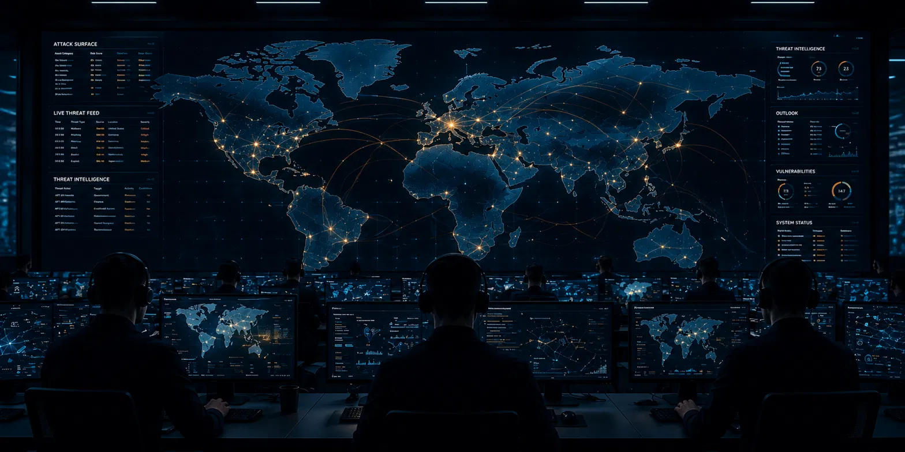

Living-off-the-Land Pre-Positioning Against U.S. Critical Infrastructure
Volt Typhoon — also tracked as Vanguard Panda, BRONZE SILHOUETTE, Insidious Taurus, and Dev-0391 — is a People's Republic of China (PRC) state-sponsored cyber actor whose objective is not espionage but pre-positioning: gaining and maintaining persistent, covert access inside U.S. critical infrastructure to enable disruptive or destructive effects in the event of a major crisis or conflict. Unlike financially motivated or intelligence-collection actors, Volt Typhoon relies almost exclusively on living-off-the-land (LotL) techniques and a botnet of compromised small-office / home-office (SOHO) routers to blend in with normal network activity — achieving dwell times measured in years rather than days. This investigation consolidates open-source reporting from CISA, the NSA, the FBI, and Microsoft into a single five-year campaign timeline, an eleven-technique MITRE ATT&CK mapping, and behavioral detection guidance for defenders.

Volt Typhoon is a Chinese state-sponsored actor active since at least mid-2021. What makes it distinct is intent. Most nation-state groups steal information; Volt Typhoon steals time and position — quietly embedding inside the networks that run America's communications, energy, water, and transportation systems so that access is already in place if a future crisis demands it.
Because the group operates almost entirely with legitimate, built-in administrative tools rather than malware, traditional antivirus and signature-based defenses rarely catch it. The intrusions look like normal IT activity. Detection requires watching behavior — who is logging in, from where, doing what — not scanning for malicious files.
Volt Typhoon's public story unfolds across five years — from quiet initial access, to a coordinated government disclosure, to a law-enforcement disruption of its infrastructure, and continued activity through the current reporting period.
| Sector | Risk Level | Why Targeted | Observed Activity |
|---|---|---|---|
| Communications | CRITICAL | Disruption of command, control, and civilian connectivity during a crisis | Confirmed access to communications providers; Guam telecom targeting |
| Energy & Electric | CRITICAL | Ability to degrade or disrupt power delivery to populations and bases | Persistent access to energy-sector IT and adjacent OT environments |
| Water & Wastewater | CRITICAL | Public-safety leverage; high-impact disruption with limited defenses | Targeting of water utility networks confirmed in joint advisories |
| Transportation | HIGH | Logistics and military mobility disruption during contingency | Access to transportation-sector systems documented by CISA |
| SOHO / Edge Devices | HIGH | Hijacked as covert proxy infrastructure to mask intrusion origin | End-of-life routers conscripted into the KV Botnet |
The February 2024 CISA / NSA / FBI advisory assessed that Volt Typhoon's pre-positioning is intended to enable disruption of critical infrastructure in the event of a major U.S.–China crisis or conflict. The threat is therefore strategic and persistent: the absence of data theft is not evidence of safety — it is the signature of an actor preparing the battlefield rather than robbing it.
Volt Typhoon (MITRE ATT&CK G1017) is a People's Republic of China state-sponsored cyber group assessed with high confidence to be conducting pre-positioning operations against United States critical infrastructure. Also tracked as Vanguard Panda, BRONZE SILHOUETTE, Insidious Taurus, Dev-0391, and UNC3236, the group has been active since at least mid-2021, with confirmed activity across the communications, energy, water and wastewater, and transportation sectors — including U.S. territories such as Guam.
Volt Typhoon is defined by its near-total reliance on living-off-the-land (LotL)
techniques. Rather than deploying custom backdoors, operators use legitimate, built-in
administrative utilities — wmic, ntdsutil, netsh,
PowerShell, and certutil — to conduct discovery, credential access,
and lateral movement. Command-and-control is routed through a botnet of compromised
SOHO network devices, allowing the group's traffic to originate from benign-looking
residential and small-business IP space and evade geolocation-based detection.
The following maps observed Volt Typhoon tradecraft to MITRE ATT&CK Enterprise v18, consolidated from CISA advisory AA24-038A, the NSA/CISA LotL guidance, and Microsoft Threat Intelligence reporting.
| Technique ID | Tactic | Technique Name | Observed Implementation | Freq |
|---|---|---|---|---|
| T1190 | Initial Access | Exploit Public-Facing Application | Exploitation of internet-facing Fortinet, Citrix, and Ivanti appliances to gain a foothold | HIGH |
| T1133 | Initial Access | External Remote Services | Abuse of VPN and remote-management services on edge devices for entry and re-entry | HIGH |
| T1078 | Defense Evasion | Valid Accounts | Use of stolen, legitimate administrator credentials to blend in as authorized users | HIGH |
| T1059.001 | Execution | Command & Scripting: PowerShell | PowerShell used for discovery and execution without dropping files to disk | HIGH |
| T1047 | Execution | Windows Management Instrumentation | wmic used for remote command execution and host enumeration | HIGH |
| T1003.003 | Credential Access | OS Credential Dumping: NTDS | ntdsutil abused to extract the Active Directory NTDS.dit database via Volume Shadow Copy | HIGH |
| T1552.001 | Credential Access | Unsecured Credentials: Credentials In Files | Harvesting of credentials stored in configuration files on compromised appliances | MED |
| T1018 | Discovery | Remote System Discovery | Native commands used to map hosts, domains, and network topology quietly | HIGH |
| T1090.002 | Command & Control | Proxy: External Proxy | Traffic routed through the KV Botnet of compromised SOHO routers to mask origin | HIGH |
| T1070 | Defense Evasion | Indicator Removal | Selective clearing of event logs and command history to frustrate forensics | MED |
| T1021.001 | Lateral Movement | Remote Services: RDP | Use of valid accounts over RDP and other native remote services to move laterally | MED |
Volt Typhoon's "toolkit" is largely the victim's own operating system. The table below summarizes the principal native binaries and capabilities documented in public reporting, in place of the custom malware families typical of other actors.
| Tool / Capability | Type | Native? | Purpose | Status |
|---|---|---|---|---|
| ntdsutil | LOLBin | Built-in | Extracts the Active Directory NTDS.dit credential database via Volume Shadow Copy. | LOTL |
| wmic | LOLBin | Built-in | Remote command execution, process and host enumeration. | LOTL |
| netsh | LOLBin | Built-in | Port-proxy configuration to pivot and tunnel traffic through compromised hosts. | LOTL |
| PowerShell | LOLBin | Built-in | Fileless discovery, execution, and scripting across the environment. | LOTL |
| certutil | LOLBin | Built-in | File transfer and encoding/decoding of staged data. | LOTL |
| Fast Reverse Proxy (FRP) | Open-source | Introduced | Publicly available proxy tool used to maintain covert remote access. | Observed |
| KV Botnet implant | Router malware | Introduced | Malware on end-of-life SOHO routers forming covert proxy infrastructure; disrupted Jan 2024. | Disrupted |
Rather than operate from attributable cloud or hosting infrastructure, Volt Typhoon routed operations through the KV Botnet — hundreds of compromised small-office / home-office routers, many of them end-of-life Cisco, NETGEAR, and similar devices no longer receiving security updates. By proxying through residential and small-business IP space geographically close to victims, the group defeated geolocation-based anomaly detection and made its inbound connections appear to originate from benign local networks.
In January 2024 the U.S. Department of Justice disclosed a court-authorized operation in which the FBI remotely removed the botnet malware from compromised routers and severed their connection to Volt Typhoon's infrastructure. The action degraded the group's proxy network but did not remove pre-positioned access from victim enterprise environments — a reminder that infrastructure takedowns and host remediation are distinct problems.
| Indicator | Type | Context |
|---|---|---|
| ntdsutil.exe | LOLBin | NTDS.dit extraction via Volume Shadow Copy — credential access |
| netsh interface portproxy | Command | Port-proxy creation for internal tunneling and pivoting |
| cmd.exe /c "wmic process call create" | Command | Remote execution and enumeration pattern |
| End-of-life SOHO routers | Infrastructure | KV Botnet proxy nodes — Cisco / NETGEAR EOL devices |
| Anomalous admin login (off-hours / new ASN) | Behavioral | Valid-account abuse from unexpected source networks |
Note: Volt Typhoon produces few static file-based IOCs by design. Behavioral indicators — anomalous use of native administrative tooling and valid accounts — are the primary detection surface. Restore any defanged values before use in tooling.
ntdsutil execution and Volume Shadow Copy creation on domain controllers — a high-fidelity signal of NTDS.dit theftwmic, netsh portproxy, and certutil invocations outside known workflowsAll technical content is sourced from publicly available government and vendor threat research. No proprietary or classified data is reproduced. IOCs are defanged per TLP:WHITE conventions.